Anglais · 2nde and 1re of the baccalauréat professionnel
American Superheroes: Mirrors of a Nation
Six short lessons, built around genuine public-domain Golden Age comic pages. Description first. Two levels: A2/B1 in 2nde, B1 in 1re.
Anglais · 2nde and 1re of the baccalauréat professionnel
Six short lessons, built around genuine public-domain Golden Age comic pages. Description first. Two levels: A2/B1 in 2nde, B1 in 1re.
Without JavaScript, every lesson is on this page, one after another. The tabs above jump to each lesson.

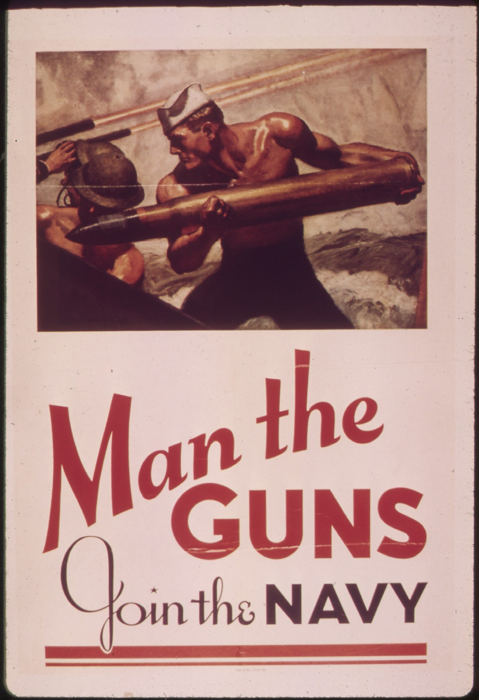
| Rubrique | Contenu |
|---|---|
| Title | American Superheroes: Mirrors of a Nation |
| Level | 2nde (A2/B1) and 1re (B1), baccalauréat professionnel |
| Thématique | Grands événements historiques; grandes œuvres; médias; personnalités (BO spécial n° 5, 11 April 2019) |
| Duration | Six lessons of 55 minutes, timed on 52 |
| Method | Spirale de Gorse, six turns |
| Final task | Lesson 6: a careful description and a two-minute oral, towards the CCF at class level |
These are the five official activities of the Bulletin officiel for langues vivantes in the baccalauréat professionnel.
Six turns. The French name of the method is kept. Méthode de la spirale de Gorse conçue par Madame Carole Paoli Pompougnac.
The number of turns is never fixed: it varies with the length of the text and the intensity of what there is to say.
The tip. When a society tells its story through images of invincible heroes, what happens to ordinary courage, to the enemy it invents, and to those it leaves out of the picture?
Activities in this lesson: COCompréhension orale
Look first. Do not interpret yet. This is a real comic page from 1945. We may print it because it is in the public domain.
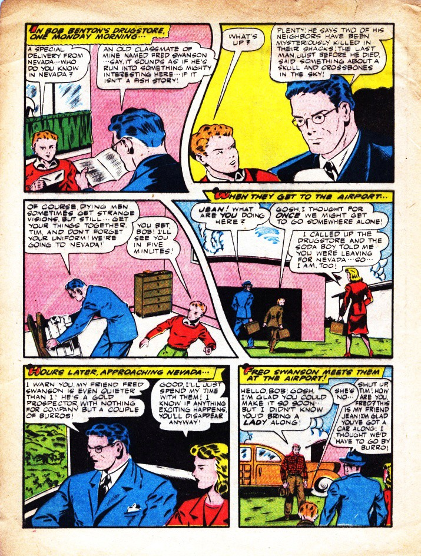
These are crops from the same 1945 page, not drawings.
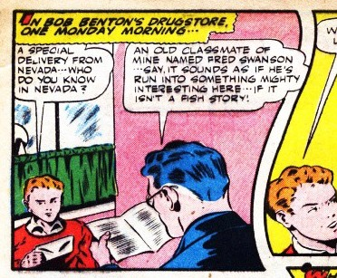
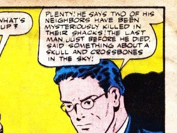
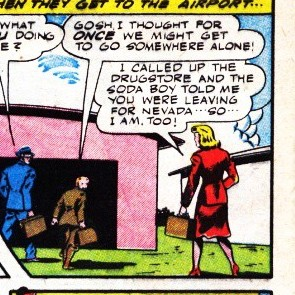
| Word | Meaning |
|---|---|
| panel (or frame) | one picture on the page, in a box |
| gutter | the space between two panels |
| speech balloon | what a character says |
| caption | a box of narration (often yellow here) |
| reading path | the order we read: usually left to right, then down |
| in the first panel / on the left / on the right | prepositions of place |
A. How many panels do you count? Number them along the reading path.
B. Find a gutter, a speech balloon, a caption. Say where each one is.
COC. Listen. The teacher reads one balloon, or one caption. Point to it on the page. Say what you heard.
C. Complete: In the first panel, on the left, I can see... The boy in the red shirt is... A woman in a red coat is... The caption at the top says...
2nde. Six short sentences, with four prepositions and three words from the table. 1re. Eight sentences, then: This page cannot prove...
Sentence starters. In the first panel... / On the right... / Between the two panels (in the gutter)... / The balloon in the top right says...
Homework. Five sentences about this page. Do not search for a Marvel or DC image.
Méthode conçue par Madame Carole Paoli Pompougnac. Le nom rend hommage à sa grand-mère par alliance, Madame Armandine Gorse, avec un S. On gravit un texte, un audio ou une image comme une pente : chaque tour est une prise plus haute. On part de ce qui saute aux yeux, puis l'attention se resserre, jusqu'à la pointe, le sommet où l'essentiel se laisse voir. Quatre tours, puis la pointe. À appliquer, dans chaque lesson, au document principal (texte, image ou audio). Les réponses détaillées restent en Version prof.
Dans cette séquence, la spirale compte six tours, présentés dans l'introduction.

Je remarque (I notice)
Ce qui saute aux yeux, la première impression.
I notice… / This is about…
Je repère (I spot)
Un détail, un passage, un élément plus net.
I spot… / The key word is…
Je comprends (I understand)
Ce que ces éléments permettent de comprendre.
This shows that… / They have in common…
J'anticipe (I anticipate)
La visée du texte, ce qu'il faut en faire.
The text wants me to… / I anticipate…
Je trouve le sens (I find the meaning)
La pointe, le point final : l'essentiel que l'on peut défendre, et sa limite. Ce point final cadre et recentre la démarche. Il évite le hors-sujet et les conclusions hâtives qui fausseraient l'analyse du texte. On peut finir par une brève ouverture sur un autre débat.
The point is… / I keep to the text: … / I stay focused on… / Beyond this, other questions may arise and open up further exploration.
Two more real pages from the same issue. Describe the movement.
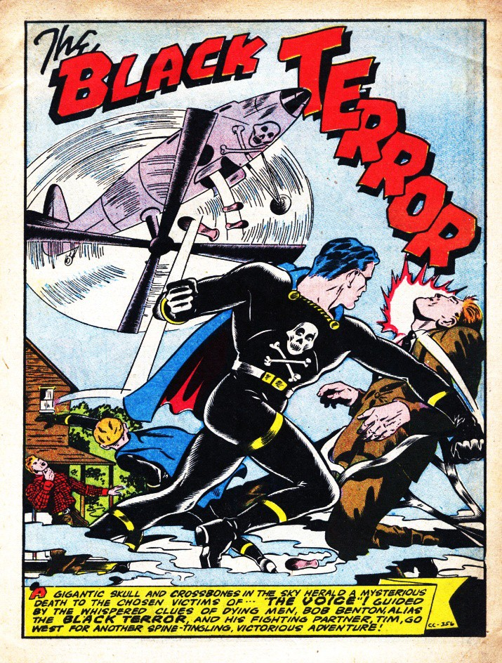
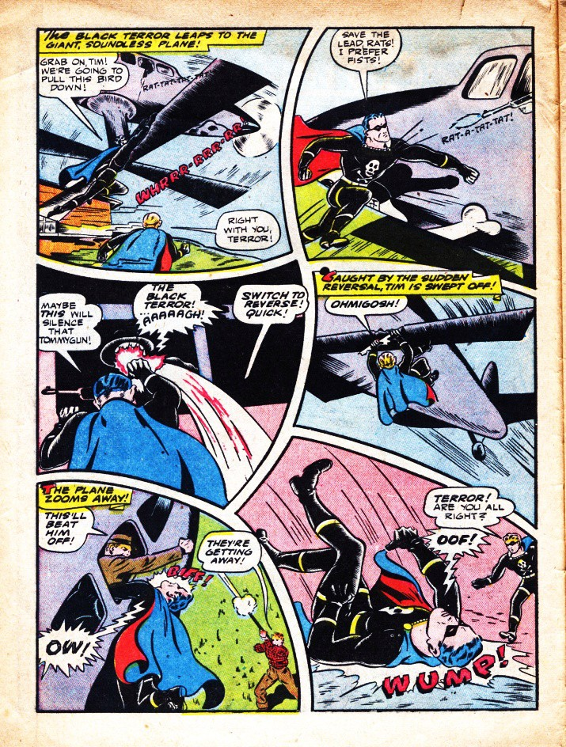
Crops from page 6 of the same issue. No drawings.
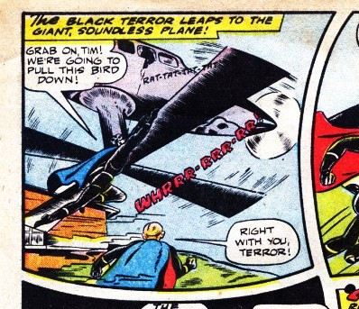
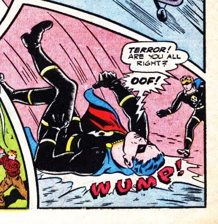
| Word | Meaning | On these pages |
|---|---|---|
| splash page | a page with one large image | Page 3 is a splash. |
| motion lines | lines that show speed | Around the propeller; around the plane. |
| onomatopoeia | a sound written as a word | WUMP!, OOF!, OW!, RAT-A-TAT-TAT, WHIRRR |
| to leap / to fall / to zoom / to punch | verbs of movement | The hero leaps. A body is falling. |
| diagonally | in a slanted line | A body falls diagonally across the panel. |
| dynamic / static | full of movement / still | Page 6 looks dynamic. |
A. The splash. Where is the plane? Where is the hero? What is he doing? What are the circular lines around the propeller?
B. Page 6. Find at least four onomatopoeias. For each, say where it is and what sound it gives. Find a body in the air.
C. Five sentences in the present continuous: The hero is leaping... The plane is zooming... A man is falling...
2nde. Eight short sentences. 1re. Ten sentences, then: The page looks dynamic because...
Homework. Six sentences: three with an onomatopoeia and a preposition, three with a verb of movement.
Méthode conçue par Madame Carole Paoli Pompougnac. Le nom rend hommage à sa grand-mère par alliance, Madame Armandine Gorse, avec un S. On gravit un texte, un audio ou une image comme une pente : chaque tour est une prise plus haute. On part de ce qui saute aux yeux, puis l'attention se resserre, jusqu'à la pointe, le sommet où l'essentiel se laisse voir. Quatre tours, puis la pointe. À appliquer, dans chaque lesson, au document principal (texte, image ou audio). Les réponses détaillées restent en Version prof.
Dans cette séquence, la spirale compte six tours, présentés dans l'introduction.
Je remarque (I notice)
Ce qui saute aux yeux, la première impression.
I notice… / This is about…
Je repère (I spot)
Un détail, un passage, un élément plus net.
I spot… / The key word is…
Je comprends (I understand)
Ce que ces éléments permettent de comprendre.
This shows that… / They have in common…
J'anticipe (I anticipate)
La visée du texte, ce qu'il faut en faire.
The text wants me to… / I anticipate…
Je trouve le sens (I find the meaning)
La pointe, le point final : l'essentiel que l'on peut défendre, et sa limite. Ce point final cadre et recentre la démarche. Il évite le hors-sujet et les conclusions hâtives qui fausseraient l'analyse du texte. On peut finir par une brève ouverture sur un autre débat.
The point is… / I keep to the text: … / I stay focused on… / Beyond this, other questions may arise and open up further exploration.
A real comic from July 1941. We may print it. It is Lev Gleason’s Daredevil (1941), not Marvel’s Daredevil. The United States entered the Second World War in December 1941. This comic appeared before that.
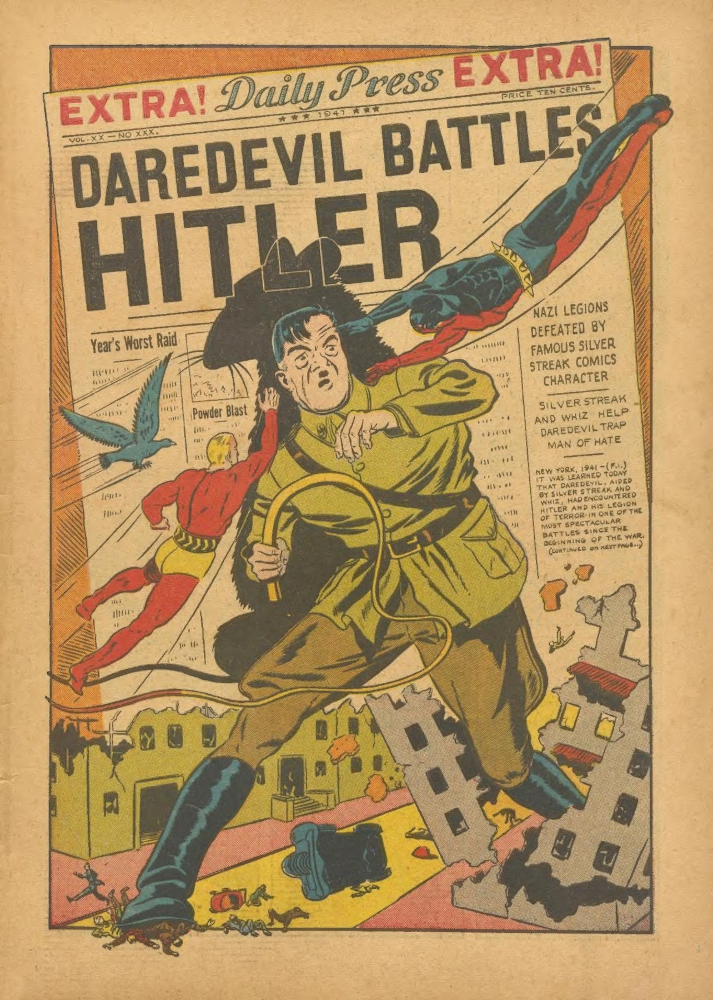
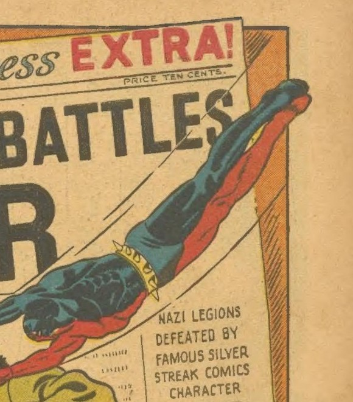
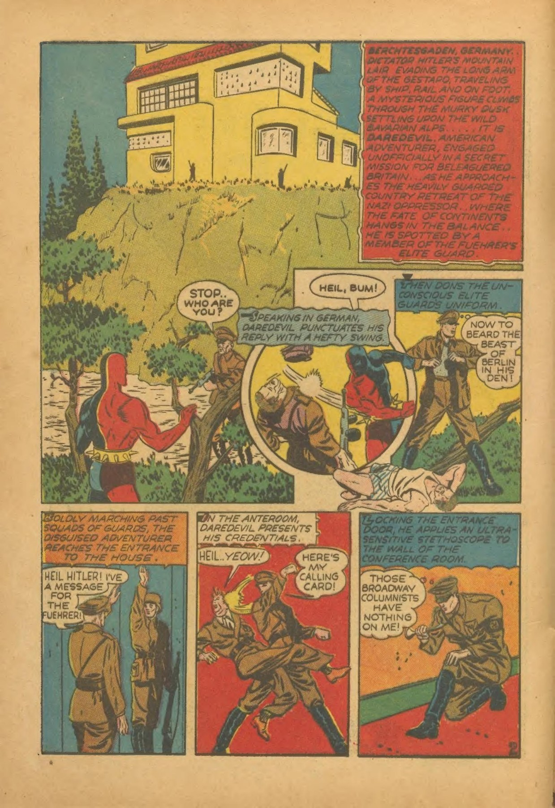
| Date | Fact |
|---|---|
| June 1938 | Superman first appears in Action Comics no. 1. The cover is protected. We do not print it. |
| March 1941 | Captain America first appears. The cover (a punch at Hitler) is protected. We do not print it. We describe it only. |
| July 1941 | This comic: Daredevil Comics no. 1. We may print it. |
| December 1941 | The United States enters the war. Wonder Woman appears in All Star Comics no. 8. |
A. The splash. What is in the centre? Who is in the air, and where? What words are at the top? Use prepositions and a verb of movement.
B. The panel page. In the large panel: where is the house? Where is the red figure? Follow the reading path down to the three small panels.
C. F, I or U? (1) This comic appeared in July 1941, before the United States entered the war. (2) Every American wanted this hero to punch the enemy. (3) The splash may want the reader to see a clear enemy and a fast, powerful hero. Answers, in the correction sheet: 1 F; 2 U; 3 I.
2nde. Eight sentences: description, then one may and one cannot prove. 1re. About 120 words. What enemy does this page invent? What does it not show?
Homework. The four dates, each with one fact. Two sentences about the splash.
Méthode conçue par Madame Carole Paoli Pompougnac. Le nom rend hommage à sa grand-mère par alliance, Madame Armandine Gorse, avec un S. On gravit un texte, un audio ou une image comme une pente : chaque tour est une prise plus haute. On part de ce qui saute aux yeux, puis l'attention se resserre, jusqu'à la pointe, le sommet où l'essentiel se laisse voir. Quatre tours, puis la pointe. À appliquer, dans chaque lesson, au document principal (texte, image ou audio). Les réponses détaillées restent en Version prof.
Dans cette séquence, la spirale compte six tours, présentés dans l'introduction.
Je remarque (I notice)
Ce qui saute aux yeux, la première impression.
I notice… / This is about…
Je repère (I spot)
Un détail, un passage, un élément plus net.
I spot… / The key word is…
Je comprends (I understand)
Ce que ces éléments permettent de comprendre.
This shows that… / They have in common…
J'anticipe (I anticipate)
La visée du texte, ce qu'il faut en faire.
The text wants me to… / I anticipate…
Je trouve le sens (I find the meaning)
La pointe, le point final : l'essentiel que l'on peut défendre, et sa limite. Ce point final cadre et recentre la démarche. Il évite le hors-sujet et les conclusions hâtives qui fausseraient l'analyse du texte. On peut finir par une brève ouverture sur un autre débat.
The point is… / I keep to the text: … / I stay focused on… / Beyond this, other questions may arise and open up further exploration.
Activities in this lesson: PEProduction écrite
A. Colour. Look again at a Black Terror page from Lesson 1 or 2. Name the main colours, and where they are. Do not jump to a symbol. Then: The yellow captions may... but I cannot reduce the whole page to one colour meaning, because...
Roy Lichtenstein, Drowning Girl, 1963. The Museum of Modern Art, New York, object number 685.1971. The work is still protected. Madame Carole Paoli Pompougnac has asked the Estate for permission and is awaiting a reply.
Open the official page and describe what you see there: https://www.moma.org/collection/works/80249
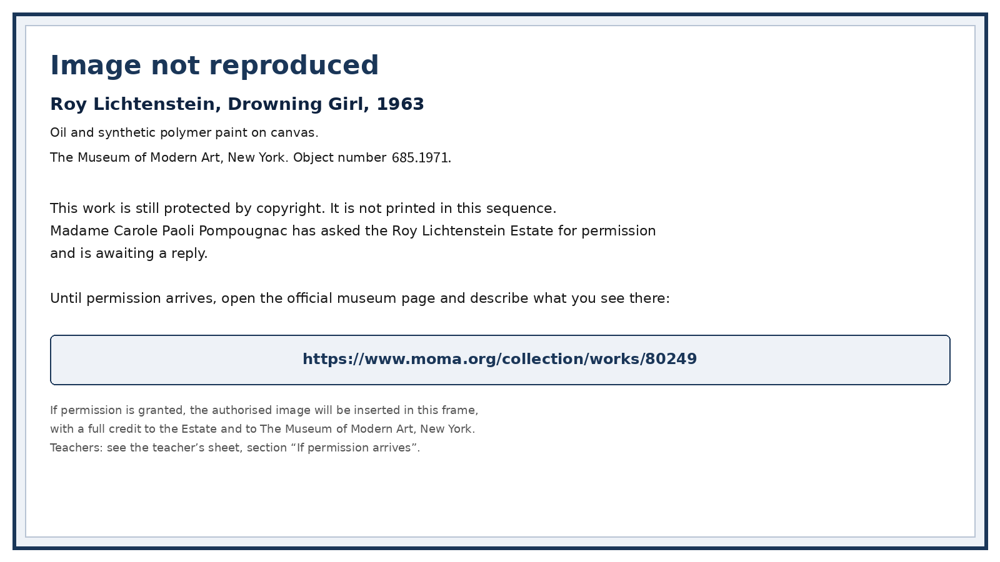
PEWrite: title, date, museum, 685.1971. Then six short sentences (who, how much of the body, posture, water, words if you see a balloon, colours and dots). Then: This may... It is close to a comic panel because... It is no longer a comic page because...
C. Who is left out? On the 1941 and 1945 pages, who is visible? Who is not? Four careful sentences, with may. No slogan. 2nde: tasks A and B. 1re: A, B and C.
Homework. A museum label of 8 lines, with the MoMA link.
Méthode conçue par Madame Carole Paoli Pompougnac. Le nom rend hommage à sa grand-mère par alliance, Madame Armandine Gorse, avec un S. On gravit un texte, un audio ou une image comme une pente : chaque tour est une prise plus haute. On part de ce qui saute aux yeux, puis l'attention se resserre, jusqu'à la pointe, le sommet où l'essentiel se laisse voir. Quatre tours, puis la pointe. À appliquer, dans chaque lesson, au document principal (texte, image ou audio). Les réponses détaillées restent en Version prof.
Dans cette séquence, la spirale compte six tours, présentés dans l'introduction.
Je remarque (I notice)
Ce qui saute aux yeux, la première impression.
I notice… / This is about…
Je repère (I spot)
Un détail, un passage, un élément plus net.
I spot… / The key word is…
Je comprends (I understand)
Ce que ces éléments permettent de comprendre.
This shows that… / They have in common…
J'anticipe (I anticipate)
La visée du texte, ce qu'il faut en faire.
The text wants me to… / I anticipate…
Je trouve le sens (I find the meaning)
La pointe, le point final : l'essentiel que l'on peut défendre, et sa limite. Ce point final cadre et recentre la démarche. Il évite le hors-sujet et les conclusions hâtives qui fausseraient l'analyse du texte. On peut finir par une brève ouverture sur un autre débat.
The point is… / I keep to the text: … / I stay focused on… / Beyond this, other questions may arise and open up further exploration.
Activities in this lesson: PEProduction écrite
A short, serious game. Teams of three or four. If you miss a clue, ask for a hint; you can still finish. Restore accurate labels. Do not mislead the visitor.
Look at The Black Terror no. 11, page 4 (Lesson 1). How many panels? What is in the gutter? What is in the first caption? The code is the number of panels.
A visitor has written: “This is the 1938 Superman cover, a Marvel still from 2011, in the public domain. Lev Gleason’s Daredevil is the same character as Marvel’s Daredevil.” Rewrite a correct label for Daredevil Comics no. 1, July 1941. The code word is the month of publication, in English, in lower case.
On The Black Terror no. 11, page 6, find three onomatopoeias. For each, write the word and where it is. The code is the onomatopoeia in the bottom right.
Choose the careful option, or rewrite it carefully:
PEWrite six to eight lines. Use two dates and four terms from the vocabulary. Solutions are on the correction sheet. Homework. Eight lines: what you can now describe; one date; one protected work you will not copy.
Méthode conçue par Madame Carole Paoli Pompougnac. Le nom rend hommage à sa grand-mère par alliance, Madame Armandine Gorse, avec un S. On gravit un texte, un audio ou une image comme une pente : chaque tour est une prise plus haute. On part de ce qui saute aux yeux, puis l'attention se resserre, jusqu'à la pointe, le sommet où l'essentiel se laisse voir. Quatre tours, puis la pointe. À appliquer, dans chaque lesson, au document principal (texte, image ou audio). Les réponses détaillées restent en Version prof.
Dans cette séquence, la spirale compte six tours, présentés dans l'introduction.
Je remarque (I notice)
Ce qui saute aux yeux, la première impression.
I notice… / This is about…
Je repère (I spot)
Un détail, un passage, un élément plus net.
I spot… / The key word is…
Je comprends (I understand)
Ce que ces éléments permettent de comprendre.
This shows that… / They have in common…
J'anticipe (I anticipate)
La visée du texte, ce qu'il faut en faire.
The text wants me to… / I anticipate…
Je trouve le sens (I find the meaning)
La pointe, le point final : l'essentiel que l'on peut défendre, et sa limite. Ce point final cadre et recentre la démarche. Il évite le hors-sujet et les conclusions hâtives qui fausseraient l'analyse du texte. On peut finir par une brève ouverture sur un autre débat.
The point is… / I keep to the text: … / I stay focused on… / Beyond this, other questions may arise and open up further exploration.
This hour trains towards the CCF (Situation A and Situation B) at class level. It is not the official examination.
1. Describe. The teacher gives you one printed page from this sequence. Write a full description: panels or splash, reading path, places, movement, balloons, captions, onomatopoeia, colour.
2. A careful reading. What may this page want the reader to feel? Use may. Then two things it cannot prove.
3. The guiding question. What do American superheroes reveal about the United States, its fears, its ideals and the images it makes of itself? End at the tip of the spiral: ordinary courage, the enemy a society invents, those it leaves out.
2nde (A2/B1). About 140-180 words. At least two dates. 1re (B1). About 180-220 words. At least three dates. A last short paragraph on one path: existential, political, or civilisational.
4. Short oral (about two minutes). Choose one printed page. Describe it. Then: This may reveal... It cannot prove...
Sentence starters. I am going to describe a public-domain page from... / In the first panel / On this splash... / The hero is (verb+ing)... / This may... / I would not say “every American”, because...
Self-correction (after the work comes back). What went wrong: ... My improved sentence: ... One word I now use more precisely: ...
Méthode conçue par Madame Carole Paoli Pompougnac. Le nom rend hommage à sa grand-mère par alliance, Madame Armandine Gorse, avec un S. On gravit un texte, un audio ou une image comme une pente : chaque tour est une prise plus haute. On part de ce qui saute aux yeux, puis l'attention se resserre, jusqu'à la pointe, le sommet où l'essentiel se laisse voir. Quatre tours, puis la pointe. À appliquer, dans chaque lesson, au document principal (texte, image ou audio). Les réponses détaillées restent en Version prof.
Dans cette séquence, la spirale compte six tours, présentés dans l'introduction.
Je remarque (I notice)
Ce qui saute aux yeux, la première impression.
I notice… / This is about…
Je repère (I spot)
Un détail, un passage, un élément plus net.
I spot… / The key word is…
Je comprends (I understand)
Ce que ces éléments permettent de comprendre.
This shows that… / They have in common…
J'anticipe (I anticipate)
La visée du texte, ce qu'il faut en faire.
The text wants me to… / I anticipate…
Je trouve le sens (I find the meaning)
La pointe, le point final : l'essentiel que l'on peut défendre, et sa limite. Ce point final cadre et recentre la démarche. Il évite le hors-sujet et les conclusions hâtives qui fausseraient l'analyse du texte. On peut finir par une brève ouverture sur un autre débat.
The point is… / I keep to the text: … / I stay focused on… / Beyond this, other questions may arise and open up further exploration.
La rédaction est une production écrite. Chaque élève peut aussi apporter une feuille en cours.
Four documents, each in PDF, Word and LibreOffice. You may use and adapt these documents, with credit to their author, without commercial use, and share your versions under the same conditions. CC BY-NC-SA 4.0.
Parcours de l'élève absent ou hospitalisé : PDF · Word (.docx) · LibreOffice (.odt).
McClelland Barclay, Man the Guns, Join the Navy, 1942, United States Navy recruiting poster. National Archives (NARA) 513519; Library of Congress, Prints and Photographs Division, reproduction number LC-USZC4-2009. Public domain (United States government work). Image via Wikimedia Commons.
The Black Terror no. 11, August 1945, Nedor / Better Publications, art by Ed Moritz: pages 3, 4 and 6. Public domain (United States, 1945; copyright not renewed). Wikimedia Commons.
Daredevil Comics no. 1, July 1941, Lev Gleason / Your Guide Publications: splash and an interior page. Public domain (United States, 1941; copyright not renewed). Internet Archive and Wikimedia Commons. Not Marvel’s Daredevil. The original cover is not reprinted (racist caricature of the Claw).
Madame Carole Paoli Pompougnac
conçu par Madame Carole Paoli Pompougnac. Comic pages: public domain, full credits above and in the documents. Méthode de la spirale de Gorse conçue par Madame Carole Paoli Pompougnac.
| Minutes | Étape | Ce que font les élèves | Activité |
|---|---|---|---|
| 0 à 5 | Mise en route | Image projetée sans titre : chacun dit un mot en anglais (colour, man, city…). | PO |
| 5 à 15 | Écoute | L'enseignante décrit la page 4 de The Black Terror no. 11 (1945) deux fois ; les élèves montrent les cases dont elle parle. | CO |
| 15 à 27 | Observation guidée | Nombre de cases, gouttière, bulles, récitatifs, lecture des détails agrandis. | CE |
| 27 à 37 | Building your vocabulary | panel, gutter, speech balloon, caption, splash ; jeu de désignation en binôme. | PI |
| 37 à 47 | Étude de la langue | There is / there are, prépositions de lieu (in the top left panel, at the bottom). | |
| 47 à 52 | Trace écrite et devoirs | Trace recopiée, devoirs notés. | PE |
| 52 à 55 | Marge | Rangement, sortie de la salle. La lesson dure 55 minutes, minutée sur 52. |
Trace écrite : On this page there are … panels. In the first panel, there is … A caption gives information; a balloon gives words.
Devoirs : Apprendre les cinq mots de la lesson ; décrire une case en trois phrases.
Sortie de secours (8 dernières minutes, si le tableau numérique ne marche pas ou si la lesson déborde) : Description orale collective d'une seule case, trace écrite dictée, devoirs au tableau.
| Minutes | Étape | Ce que font les élèves | Activité |
|---|---|---|---|
| 0 à 5 | Rappel | Trois mots de la lesson 1, interrogation orale rapide. | PO |
| 5 à 15 | Observation | Pages 3 et 6 : la grande case (splash), les onomatopées, les lignes de mouvement. | CE |
| 15 à 23 | Écoute | L'enseignante lit une action en trois phrases ; les élèves retrouvent la case. | CO |
| 23 à 35 | Étude de la langue | Présent en be + -ing pour décrire une image (he is jumping, the car is speeding). | |
| 35 à 47 | Production en binôme | A décrit une case, B la retrouve, puis on échange. | PI |
| 47 à 52 | Trace écrite et devoirs | PE | |
| 52 à 55 | Marge | Rangement, sortie de la salle. La lesson dure 55 minutes, minutée sur 52. |
Trace écrite : A splash is one large image. Onomatopoeia shows sound (BANG!). Motion lines show movement. In this panel, the hero is jumping.
Devoirs : Écrire quatre phrases en be + -ing sur une case au choix.
Sortie de secours (8 dernières minutes, si le tableau numérique ne marche pas ou si la lesson déborde) : Jeu « find the panel » en classe entière, trace dictée.
| Minutes | Étape | Ce que font les élèves | Activité |
|---|---|---|---|
| 0 à 5 | Rappel | Une onomatopée, une phrase en be + -ing. | PO |
| 5 à 13 | Contexte | Écoute : l'enseignante présente 1941 et l'entrée en guerre des États-Unis (deux fois), questions de repérage. | CO |
| 13 à 27 | Lecture | Daredevil Comics no. 1 (juillet 1941), page d'ouverture : qui, contre qui, quel message. | CE |
| 27 à 37 | Étude de la langue | Prétérit (The comic appeared in 1941. The USA entered the war in December). | |
| 37 à 47 | Production | Écrire 50 mots : What kind of hero is he? | PE |
| 47 à 52 | Trace écrite et devoirs | ||
| 52 à 55 | Marge | Rangement, sortie de la salle. La lesson dure 55 minutes, minutée sur 52. |
Trace écrite : Daredevil Comics no. 1 appeared in July 1941, before the USA entered the war. The hero fights Hitler: comics can carry a political message.
Devoirs : Apprendre cinq verbes irréguliers au prétérit ; finir le texte de 50 mots.
Sortie de secours (8 dernières minutes, si le tableau numérique ne marche pas ou si la lesson déborde) : Lecture commentée de la page en classe entière, trace dictée.
| Minutes | Étape | Ce que font les élèves | Activité |
|---|---|---|---|
| 0 à 5 | Rappel | Une phrase au prétérit sur 1941. | PO |
| 5 à 17 | Couleur | Reprendre une page de la lesson 1 ou 2 : nommer les couleurs et leur place, sans plaquer un symbole. | CE, PO |
| 17 à 25 | Pop Art | Écoute : l'enseignante présente Drowning Girl de Roy Lichtenstein (1963, MoMA), œuvre non reproduite ; lien vers la page du musée. | CO |
| 25 à 35 | Étude de la langue | may, might, cannot pour nuancer (The yellow may suggest… but I cannot reduce…). | |
| 35 à 47 | Qui est absent ? | En binôme : qui ne voit-on pas sur ces pages ? Femmes, minorités ; une phrase chacun. | PI, PE |
| 47 à 52 | Trace écrite et devoirs | ||
| 52 à 55 | Marge | Rangement, sortie de la salle. La lesson dure 55 minutes, minutée sur 52. |
Trace écrite : The yellow captions may … but I cannot reduce the whole page to one colour meaning. Some people are left out of these pages.
Devoirs : Écrire trois phrases avec may, might, cannot sur une page au choix.
Sortie de secours (8 dernières minutes, si le tableau numérique ne marche pas ou si la lesson déborde) : Tour de table « one colour, one place », trace dictée.
| Minutes | Étape | Ce que font les élèves | Activité |
|---|---|---|---|
| 0 à 4 | Consignes | Équipes de trois ou quatre, règles du jeu. | CE |
| 4 à 40 | Escape game | Enveloppes 1 à 3 : compter les cases, corriger une étiquette fausse, etc. Indices sur demande. | CE, PI, PE |
| 40 à 47 | Correction | Chaque équipe lit son étiquette corrigée. | PO |
| 47 à 52 | Trace écrite et devoirs | PE | |
| 52 à 55 | Marge | Rangement, sortie de la salle. La lesson dure 55 minutes, minutée sur 52. |
Trace écrite : A good museum label is accurate: it says what we see, the date, the artist, and it does not mislead the visitor.
Devoirs : Réécrire une étiquette de musée pour une page de la séquence (40 mots).
Sortie de secours (8 dernières minutes, si le tableau numérique ne marche pas ou si la lesson déborde) : Une seule enveloppe en classe entière, trace dictée.
| Minutes | Étape | Ce que font les élèves | Activité |
|---|---|---|---|
| 0 à 3 | Consignes | La page imprimée est distribuée. | CE |
| 3 à 20 | Décrire | Description écrite complète (cases, lecture, lieux, mouvement, bulles, couleur). | PE |
| 20 à 32 | Lecture prudente | Ce que la page veut faire ressentir (may), deux choses qu'elle ne prouve pas. | PE |
| 32 à 47 | Oral | Par deux, 2 minutes chacun : What do American superheroes tell us about the nation?, puis deux questions. | PO, PI |
| 47 à 52 | Ramassage et bilan | ||
| 52 à 55 | Marge | Rangement, sortie de la salle. La lesson dure 55 minutes, minutée sur 52. |
Trace écrite : Pas de trace écrite : tâche finale.
Devoirs : Aucun.
Sortie de secours (8 dernières minutes, si le tableau numérique ne marche pas ou si la lesson déborde) : Parties 1 et 2 écrites seulement ; l'oral est reporté à la lesson suivante.
American Superheroes · Première baccalauréat professionnel, B1 · contexte de la vie quotidienne et sociale (œuvres, histoire et culture des États-Unis)
How do we read a comic page before we interpret it?
A comic page is made of panels separated by gutters. Speech balloons show what characters say; captions give the narration. We read left to right, then down: this is the reading path.
I describe before I interpret: In the first panel, on the left, a boy in a red shirt is sitting.
What is a gutter?
The space between two panels.
What is a caption?
A box of narration (often yellow on this page).
Version courte (15 min) : observer la page, faire la tâche A et recopier la trace écrite.
À envoyer ou à rendre : les tâches A à C, les huit phrases et l’enregistrement.
How can a still image show speed and sound?
A splash page is one large image. Motion lines show speed; onomatopoeias are sounds written as words (WUMP!, WHIRRR).
The present continuous describes the action in the picture: The hero is leaping. A body is falling diagonally. Page 6 looks dynamic.
Which onomatopoeia is in the bottom right of page 6?
WUMP!
What do the circular lines around the propeller show?
Movement and speed (motion lines).
Version courte (15 min) : faire la tâche B et recopier la trace écrite.
À envoyer ou à rendre : les tâches A et B, les dix phrases, l’enregistrement et les six phrases du devoir.
What does a 1941 comic tell us about the United States at war?
Daredevil Comics no. 1 appeared in July 1941, before the United States entered the Second World War in December 1941. Superman first appeared in June 1938, Captain America in March 1941.
A fact can be dated; an interpretation uses may; a claim about every American is unsupported.
“Every American wanted this hero to punch the enemy.” F, I or U?
U: unsupported, we cannot know what every American wanted.
When did the United States enter the war?
In December 1941.
Version courte (15 min) : lire la frise, faire la tâche C et recopier la trace écrite.
À envoyer ou à rendre : les tâches A à C, l’enregistrement et les cinq phrases.
What do colours suggest, and who is missing from the page?
Colours guide the eye, but one colour does not have one fixed meaning. Pop Art (Roy Lichtenstein, 1963) borrowed the style of comic panels for paintings.
A careful reader also asks who is not on the page: These pages may leave out…
Which museum holds Drowning Girl, and what is its number?
The Museum of Modern Art, New York, 685.1971.
Version courte (15 min) : faire la tâche A et recopier la trace écrite.
À envoyer ou à rendre : les tâches A à C, l’enregistrement et l’étiquette de musée de huit lignes (devoir).
Can I restore accurate labels without misleading the visitor?
Envelope 2: what is the code word?
july
Envelope 3: what is the code?
WUMP!
Version courte (15 min) : faire les enveloppes 1 et 3.
À envoyer ou à rendre : les trois codes, l’étiquette réécrite, le final statement et les huit lignes du devoir.
What do American superheroes reveal about the United States, its fears and its ideals?
Version courte (15 min) : faire les parties 1 et 2 ; la suite se fait un autre jour.
À envoyer ou à rendre : l’écrit, les deux enregistrements et l’autocorrection.
La rédaction est une production écrite. Chaque élève peut aussi apporter une feuille en cours.
Les fiches de la séquence (PDF, Word, LibreOffice) restent utilisables sans connexion ; les corrigés de l’escape game sont sur la fiche de correction.
© 2026 Madame Carole Paoli Pompougnac · CC BY-NC-SA 4.0
Rappel du format officiel (arrêté du 17 juin 2020, annexe V ; épreuve de langue vivante, bac pro, coefficient 2) :
| Minutes | Étape | Ce que font les élèves | Activité |
|---|---|---|---|
| 0 à 2 | Consignes | Les élèves lisent les trois parties et choisissent leur sujet d'expression écrite. | Lecture |
| 2 à 17 | Compréhension de l'oral | Trois écoutes du document (1 min 30 au plus), une minute entre chaque écoute ; prise de notes ; compte rendu en français. | CO |
| 17 à 32 | Compréhension de l'écrit | Lecture du document, compte rendu en français guidé par les questions. | CE |
| 32 à 50 | Expression écrite | Un sujet au choix, 100 à 120 mots au moins. | PE |
| 50 à 52 | Ramassage | Relecture, comptage des mots, ramassage. | |
| 52 à 55 | Marge | Rangement, sortie de la salle. La lesson dure 55 minutes, minutée sur 52. |
Compréhension de l'oral. document à choisir : une vidéo authentique de 1 min 30 au plus présentant la naissance de Superman (chaîne d'un musée ou d'une bibliothèque, par exemple la Library of Congress ou le Smithsonian, en libre accès).
Consigne : « Écoutez trois fois le document. Rendez compte en français de ce que vous avez compris : qui parle, de quoi, où, pourquoi, et ce que la personne pense. »
Compréhension de l'écrit. Texte d'entraînement (le jour du CCF, prendre un document authentique inconnu de 15 lignes au plus) :
Superman first appeared in Action Comics no. 1 in June 1938. His creators, Jerry Siegel and Joe Shuster, were two young men from Cleveland, Ohio. They were the sons of Jewish immigrants from Europe. Like their hero, who comes from another planet, they knew what it means to arrive in a new country. In 1938, they sold the rights to Superman for 130 dollars. The comic was a huge success: soon, Superman had his own magazine, a radio show and cartoons. Today, a copy of Action Comics no. 1 can sell for millions of dollars at auction.
Source : texte d'entraînement écrit pour la classe, d'après les faits publiés par la Library of Congress et la Smithsonian Institution.
Consigne : « Rendez compte en français du document. Aidez-vous des questions. »
Expression écrite. Choisissez un sujet. Écrivez 100 à 120 mots au moins.
Organisation : 10 minutes par élève (5 minutes de présentation, 5 minutes d'échange). Avec 24 élèves, prévoir 6 lessons, quatre passages par lesson. Pendant les passages, les autres élèves travaillent en autonomie au fond de la salle (fiche ci-dessous), casque ou travail écrit, sans bruit.
| Minutes | Étape | Ce que font les élèves | Activité |
|---|---|---|---|
| 0 à 4 | Installation | Ordre de passage au tableau ; les élèves en autonomie prennent la fiche. | Lecture |
| 4 à 15 | Passage 1 | 5 min de présentation sans lecture, puis 5 min d'échange ; 1 min de notation. | PO, PI |
| 15 à 26 | Passage 2 | Même déroulé. | PO, PI |
| 26 à 37 | Passage 3 | Même déroulé. | PO, PI |
| 37 à 48 | Passage 4 | Même déroulé. | PO, PI |
| 48 à 52 | Bilan collectif | Deux conseils pour la classe, sans nommer personne. | |
| 52 à 55 | Marge | Rangement, sortie de la salle. La lesson dure 55 minutes, minutée sur 52. |
Sujets de présentation possibles (l'élève choisit, une image et des notes autorisées, pas de texte rédigé) :
Questions d'échange, à adapter : « Why did you choose this? » ; « What was the most difficult part? » ; « What would you do differently? » ; « Would you recommend it to a customer? Why? » ; « What did you learn? » ; « Can you tell me more about…? »
Travail en autonomie pendant les passages : préparer sa propre fiche de présentation (5 mots clés, 3 phrases d'accroche, 1 image), puis faire les exercices d'Étude de la langue de la séquence.
Situation A, sur 12 (chaque activité de 0 à 4, demi-points possibles) :
| Degré | Compréhension de l'oral | Compréhension de l'écrit | Expression écrite |
|---|---|---|---|
| 4 (4 ou 3,5) | Comprend l'essentiel des informations, perçoit la cohérence d'ensemble, identifie le point de vue ou les intentions | Mêmes critères sur le document écrit | S'exprime clairement, même avec des erreurs dans les structures complexes ; lexique varié ; expose avantages ou inconvénients ; justifie |
| 3 (3 ou 2,5) | Relève certains des éléments porteurs de sens ; saisit certains liens entre les informations | Mêmes critères sur le document écrit | Écrit descriptif ou narratif au volume attendu ; structures simples ; lexique assez varié ; sentiments ou point de vue ; erreurs qui gênent peu |
| 2 (2 ou 1,5) | Identifie la thématique ou l'objet principal ; comprend les informations les plus significatives et quelques détails | Mêmes critères sur le document écrit | Écrit globalement compréhensible malgré des erreurs ; cherche à exprimer une appréciation ; effort de construction |
| 1 (1 ou 0,5) | Identifie quelques sons, mots ou éléments isolés ; comprend en partie les informations factuelles (personnes, lieux, dates) | Identifie quelques mots isolés ; comprend en partie les informations factuelles | Écrit nettement trop court ; langue en partie compréhensible ; mots isolés |
Situation B, sur 8 :
| Degré | Expression orale en continu (/4) | Interaction orale (/4) |
|---|---|---|
| 4 | Discours assez nuancé, informé, point de vue pertinent ; langue assez fluide, prononciation claire ; supports utilisés à bon escient | Réagit avec pertinence ; argumente et cherche à convaincre simplement ; langue assez fluide |
| 3 | Discours pertinent par rapport à la dimension culturelle ou professionnelle du sujet ; langue globalement correcte ; relativement autonome par rapport aux supports | Prend sa part dans l'échange ; sait se reprendre ou reformuler ; vocabulaire globalement approprié |
| 2 | Discours d'exposition (description, narration, explication) généralement compréhensible ; cherche à exprimer une appréciation ; se détache parfois des supports | S'efforce de prendre part, réagit simplement ; expressions mémorisées fréquentes |
| 1 | Mots isolés, énoncés très courts, nombreuses pauses ; s'appuie uniquement sur les supports | Intervient peu ; répétitions et relances fréquentes ; réponses brèves |
Note finale : A (/12) + B (/8) = /20. Fiche officielle : https://cache.media.education.gouv.fr/file/47/06/8/ensel369_annexe4_1423068.pdf
Rappel du format officiel (arrêté du 17 juin 2020, annexe V ; épreuve de langue vivante, baccalauréat professionnel, coefficient 2, BO n° 47 du 16 décembre 2021) :
Ce sujet sert d'entraînement en Seconde ou en Première, et de blanc en Terminale. Version prof seulement.
| Minutes | Étape | Ce que font les élèves | Activité |
|---|---|---|---|
| 0 à 2 | Consignes | Les élèves lisent les trois parties et choisissent leur sujet d'expression écrite. | Lecture |
| 2 à 17 | Compréhension de l'oral | Trois écoutes du document (1 min 30 au plus), une minute entre chaque écoute ; prise de notes ; compte rendu en français. | CO |
| 17 à 32 | Compréhension de l'écrit | Lecture du document, compte rendu en français guidé par les questions. | CE |
| 32 à 50 | Expression écrite | Un sujet au choix, 100 à 120 mots au moins. | PE |
| 50 à 52 | Ramassage | Relecture, comptage des mots, ramassage. | |
| 52 à 55 | Marge | Rangement, sortie de la salle. La lesson dure 55 minutes, minutée sur 52. |
Transcript (version prof seulement)
> Look at the page before you read the words. How many panels? What is in the gutter? Who stands in the centre, and who is missing? Superheroes are drawings, and they are also stories a country tells about itself: strength, justice, a costume, an enemy. In wartime, a hero can look like a poster. That is interesting, and it is also a problem. A museum of unfinished heroes, if we built one, would keep a place for the people the page left out: other colours, other faces, other jobs. When you describe a panel, start with what you see, then say what it is trying to make you feel.
Consigne : « Écoutez trois fois le document. Rendez compte en français de ce que vous avez compris : qui parle, de quoi, où, pourquoi, et ce que la personne pense. »
Corrigé (version prof). Le locuteur demande de regarder la planche avant le texte : nombre de cases, gouttière, qui est au centre, qui manque. Les super-héros sont des dessins et des récits qu'un pays se fait de lui-même (force, justice, costume, ennemi). En temps de guerre, le héros peut ressembler à une affiche : c'est intéressant, et c'est un problème. Un musée des héros inachevés ferait une place à ceux que la planche oublie. Pour décrire une case : d'abord ce que l'on voit, puis ce que l'image cherche à faire ressentir.
Texte d'entraînement (le jour du CCF, prendre un document authentique inconnu de 15 lignes au plus) :
> American superheroes are popular, and they are documents. A cover, a panel, a colour choice can show movement, courage, or a nation at war. They can also leave people out. In this sequence, we have practised looking slowly: caption, gutter, pose, colours. The final oral is not a fan speech. It is a short, careful description, and a judgement: what kind of hero is this, and whose story is missing? For a bac pro class, that judgement is a professional skill too: you will have to describe a product, a poster or a campaign without swallowing it whole.
Source : texte d'entraînement écrit pour la classe.
Consigne : « Rendez compte en français du document. Aidez-vous des questions. »
Corrigé (version prof). Les super-héros sont populaires et ce sont des documents : une couverture, une case, une couleur montrent le mouvement, le courage ou une nation en guerre, et peuvent oublier des gens. On a appris à regarder lentement (légende, gouttière, pose, couleurs). L'oral n'est pas un discours de fan : une description soigneuse et un jugement (quel héros, quelle histoire manque). En bac pro, c'est aussi un geste professionnel : décrire une affiche ou une campagne sans tout avaler.
Choisissez un sujet. Écrivez 100 à 120 mots au moins.
Éléments de corrigé (version prof). Une description visible d'abord (couleurs, cases, personnage), puis une interprétation prudente. Lexique de la planche : panel, caption, gutter, cover, wartime.
| Minutes | Étape | Ce que font les élèves | Activité |
|---|---|---|---|
| 0 à 4 | Installation | Ordre de passage ; les autres élèves préparent leur propre fiche en mots-clés. | Lecture |
| 4 à 14 | Passage | 5 min de présentation sans lecture, 5 min d'échange. | PO |
| Puis | Passages suivants | Même déroulé. | PO |
Présentez, en cinq minutes, une planche ou une couverture de la séquence : ce que l'on voit, ce que cela dit d'une nation, ce qui manque. Puis répondez aux questions. L'image est autorisée, pas la lecture d'un texte appris.
Questions d'interaction possibles : How does the page show movement? What kind of hero appears in wartime? Why does colour matter? Who is missing?
Éléments de corrigé (version prof). Description d'abord, jugement ensuite. Niveau A2/B1 en Seconde, B1 en Première : on attend plus de nuance en Première.
Chaque activité langagière est notée sur 20, puis ramenée pour un cinquième de la note finale. Repères de classe, alignés sur le B1+ visé en LVA (A2+ en LVB) :
| Activité | 1 à 5 | 6 à 10 | 11 à 15 | 16 à 20 |
|---|---|---|---|---|
| CO | Quelques mots isolés | Le sujet général est repéré | Les informations principales sont rendues en français | L'essentiel, des détails et le point de vue sont rendus |
| CE | Quelques éléments isolés | Le thème et quelques faits | Les informations principales, liées entre elles | L'essentiel, des détails et l'implicite |
| PE | Hors sujet ou trop court | Sujet abordé, langue encore hésitante | Sujet traité, 100 mots au moins, langue compréhensible | Argument nuancé, lexique professionnel, langue assez sûre |
| PO (continu et interaction) | Lecteur, propos très court | Présente avec aide, répond peu | Présente sans lire, répond de façon simple | Présente clairement, interagit, lexique de la séquence |
Exemple travaillé, sur le texte d'évaluation (version prof)
Pour chaque tour : la question du professeur, la réponse attendue, et ce qui se resserre.
| Tour | Question du professeur | Réponse attendue | Ce qui se resserre |
|---|---|---|---|
| 1. Je remarque (I notice) | Qu'est-ce qui saute aux yeux ? | Les super-héros américains sont populaires, et ce sont des documents. | On quitte l'idée d'une simple bande dessinée de loisir ; une planche peut se lire comme un document. |
| 2. Je repère (I spot) | Quels détails le texte nomme-t-il ? | Une couverture, une case, un choix de couleur peuvent montrer le mouvement, le courage, ou une nation en guerre. Ils peuvent aussi laisser des personnes de côté. | Le document a deux faces : ce qu'il montre, et ce qu'il écarte. |
| 3. Je comprends (I understand) | Que permettent de comprendre ces éléments ? | Une image de héros n'est pas neutre : elle construit une nation, et elle peut exclure. | La question n'est plus « qui est le héros ? », c'est « que fait l'image ? ». |
| 4. J'anticipe (I anticipate) | Que vise le texte ? | Il prépare une lecture d'image (planche, couleur, absence), pas une récitation de biographies de personnages. | On anticipe le hors-sujet : raconter les pouvoirs au lieu de lire la planche. |
| 5. Je trouve le sens (I find the meaning) | Quel est l'essentiel, et sa limite ? | Une planche parle d'un pays autant que d'un héros ; il faut dire ce qu'elle montre et ce qu'elle tait. Limite : on ne peut pas faire dire à une case tout l'histoire des États-Unis. | Une phrase défendable, ancrée dans l'image, avec sa limite. |
Dans chaque lesson, les cinq étapes s'appliquent au document du jour : ce que l'on voit sur une planche ; le mouvement ; le héros en temps de guerre ; la couleur et ceux qui manquent ; puis les deux dernières lessons de la séquence (le document d'image ou de texte prévu pour chacune).